Avsnitt 012, första utkast. En stillbild per rad i storyboard.md, byggd av utklippen i assets/ med ansiktena ritade i kod (verktyg/ansikten.py) och vita kanter enligt vita-kanter. Pilarna visar rörelsen. Varje bild visar radens tydligaste uttryck; alla uttryck står under bilden.
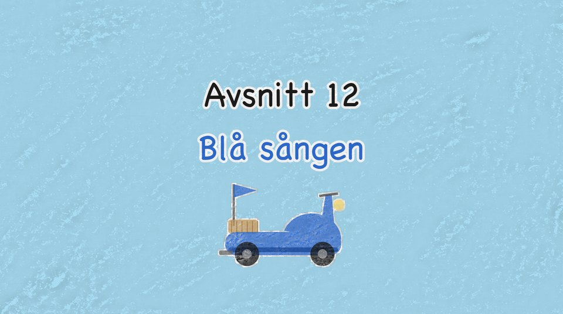
Samma intro som 003–007, Avsnitt 12 · Blå sången, titeln i blått
–
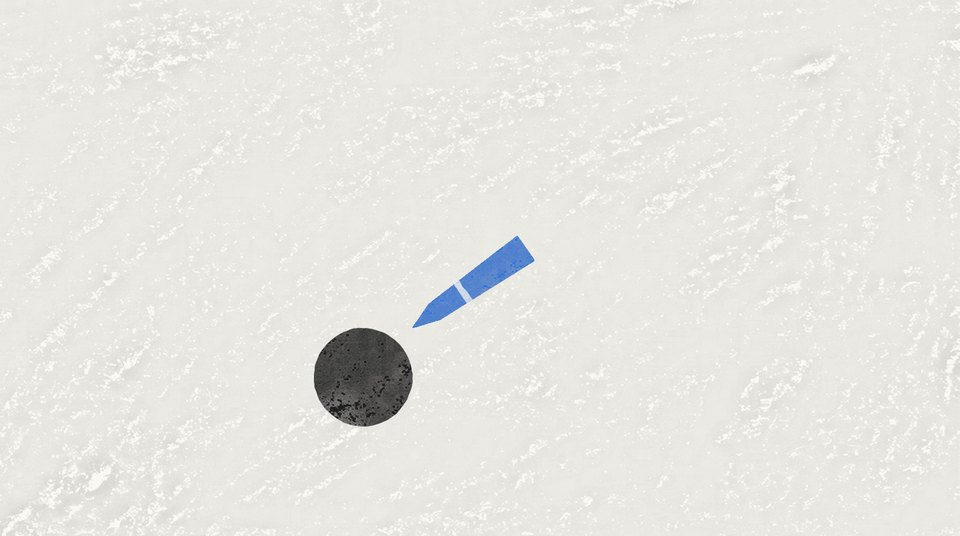
"Kritan ritar …": den blå kritan ritar ett runt hjul
– (ingen figur)
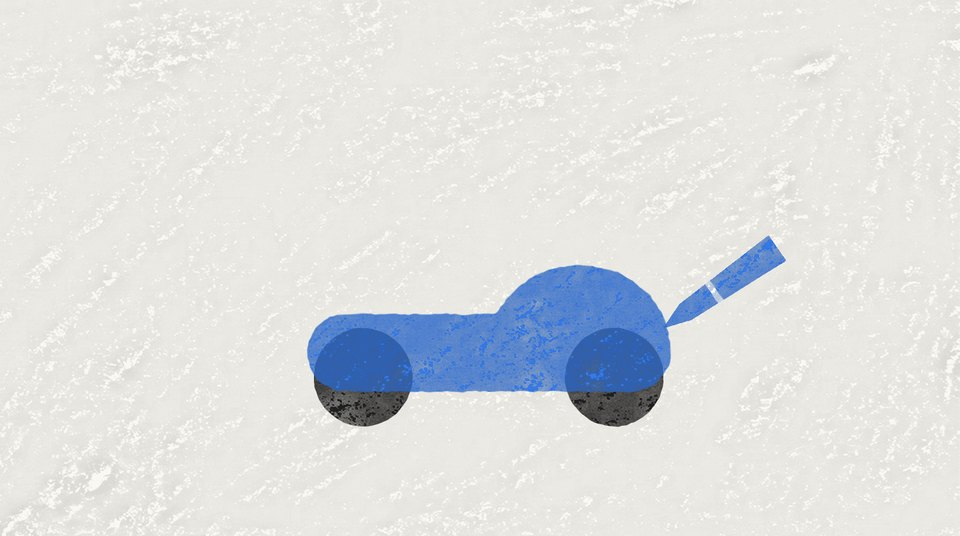
"vad kan det vara?": ett hjul till och den rundade kåpan mellan dem
–
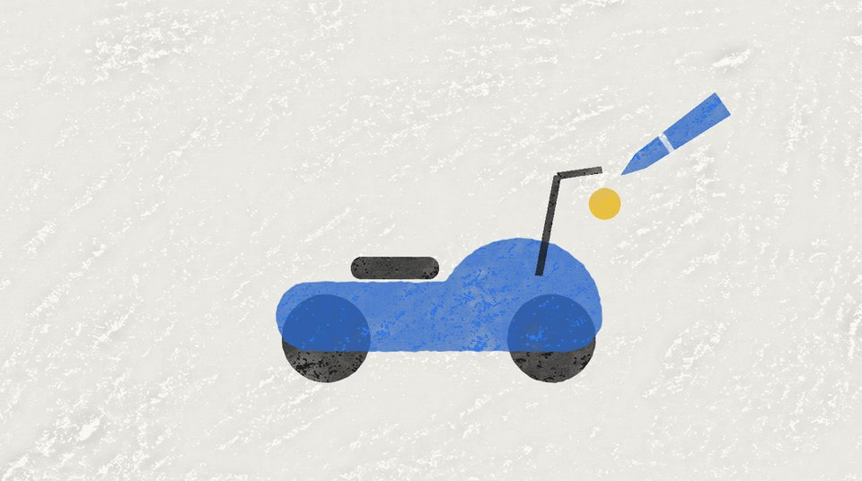
Pausen 4–5 s, barnet gissar: sadeln, styret och lampan ritas, kritan lyfter
–
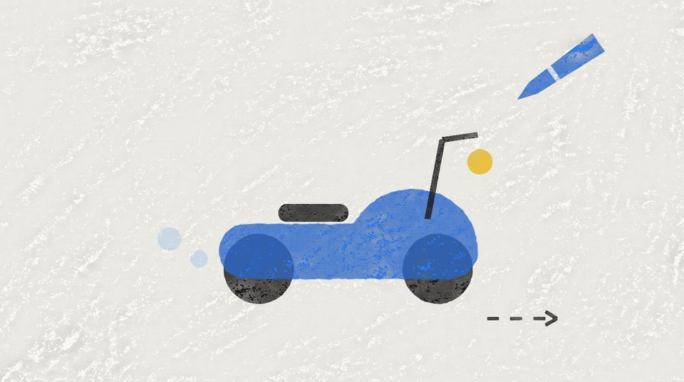
"En moped! En blå moped! Putt-putt, nu kör vi!": två små blå bubblor ur avgasröret, kameran åker in i teckningen
–
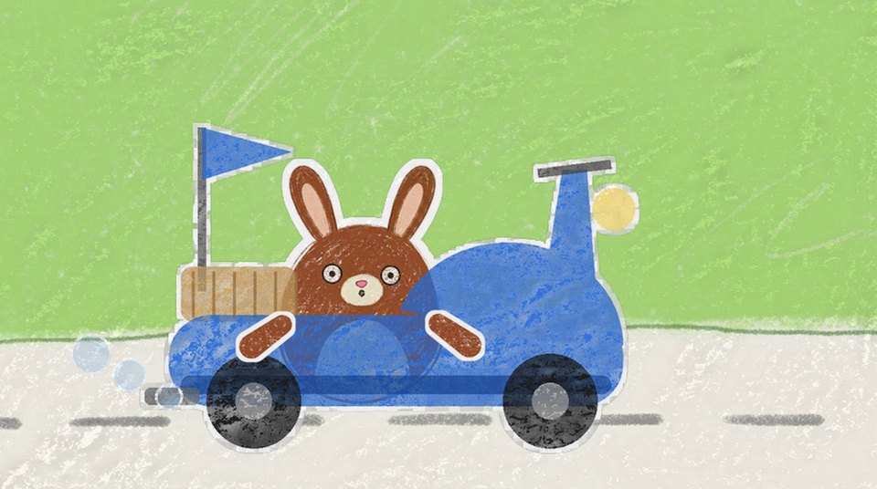
Den ritade mopeden blir Kanels moped. Kanel sitter redan på den
Kanel: forvanad → skrattar (hon ser att hon sitter på den)
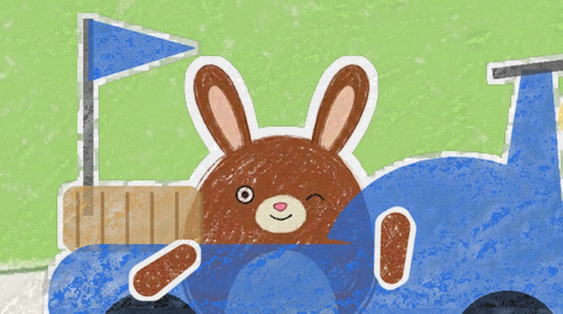
Kanel vinkar till tittaren, öronen vippar
Kanel: blinkar på "Hej", glad på "hej"
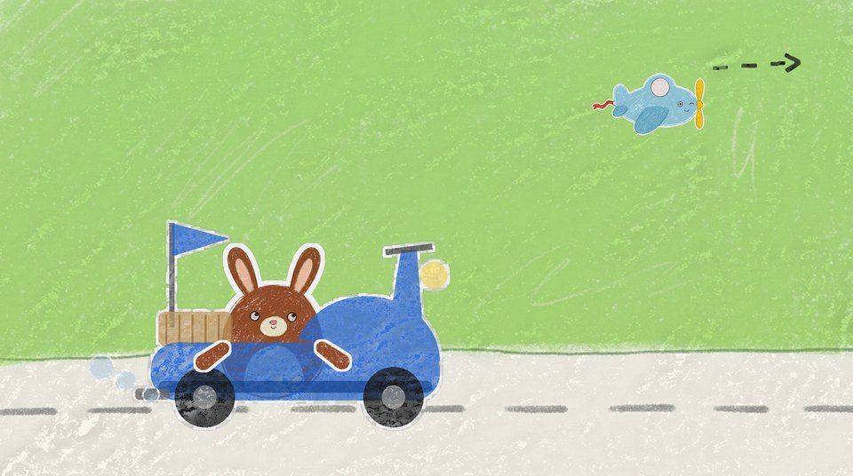
Mellanspelet: vägen glider, en blå bubbla per putt. Pella flyger långsamt förbi högt uppe och ut till höger (barnet ser flygplanet redan här)
Kanel: nyfiken, tittar upp efter Pella → skrattar. Pella: blinkar ner mot Kanel
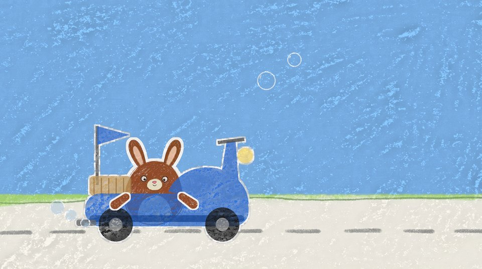
Vers 1: vägen glider, en blå såpbubbla ur avgasröret per "putt". På "Plopp!" spricker en bubbla på Kanels nos, på "Bubblorna är blå" stiger två och spricker, på "Himlen är blå" sveper kritan blått över väggen en stund
Kanel: njuter på "kör sin blå moped" → ropar på "blått är bubbligt!" → skelogd på "Plopp!" (bubblan på nosen) → skrattar på "plopp, plopp" → forvanad på "Himlen är blå" (blicken upp) → nyfiken på "letar efter blått" → ropar på "jag och du!"
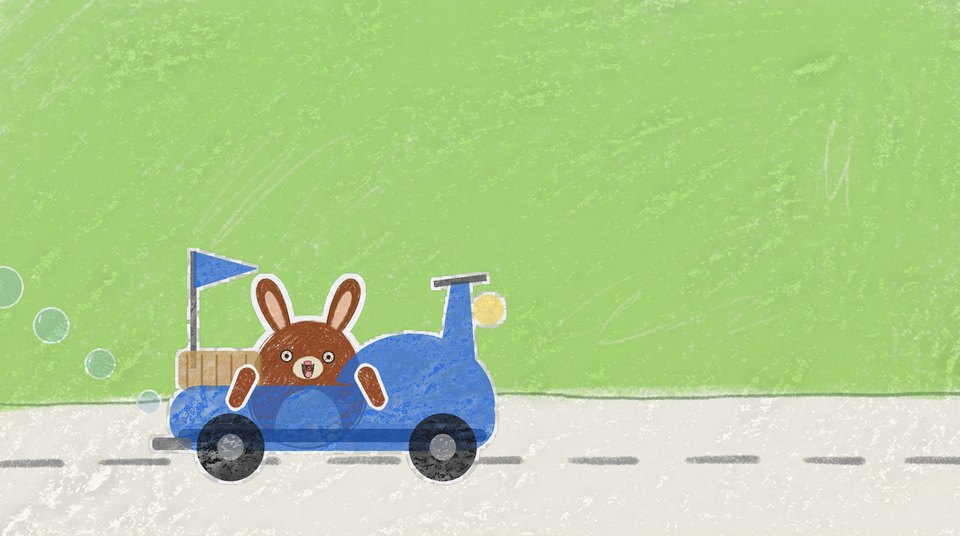
Refrängen rad 1: "Blå, blå! (Blå, blå!)": två skutt på sadeln, en blå bubbla ur avgasröret per "blå", fyra i rad på ekot
Kanel: ropar på "Blå, blå!", skrattar på ekot
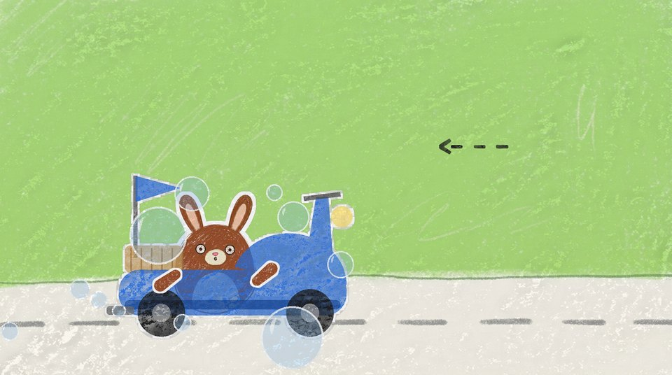
Rad 2: "Moped, moped – (putt, putt!)": kör åt höger, ett moln av blå bubblor driver in framifrån
Kanel: njuter (vinden i öronen) → forvanad när bubbelmolnet syns
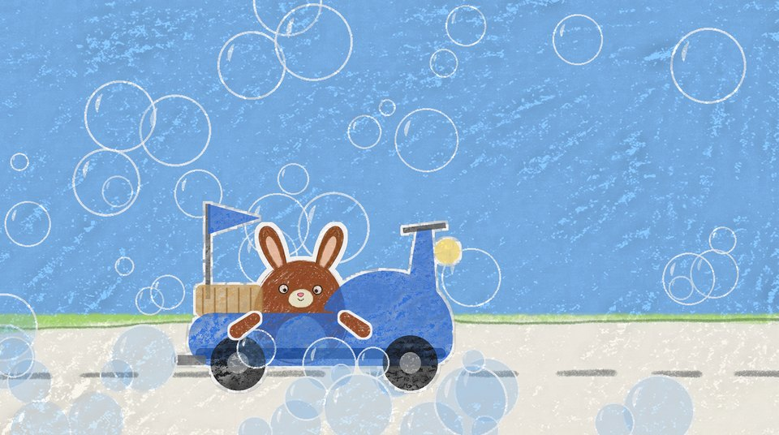
Rad 3: "In i bubblorna – (plopp, plopp!)": in bland hundratals blå bubblor, kritan sveper blått över väggen, två bubblor spricker mot nosen
Kanel: forvanad → skelogd på varje plopp
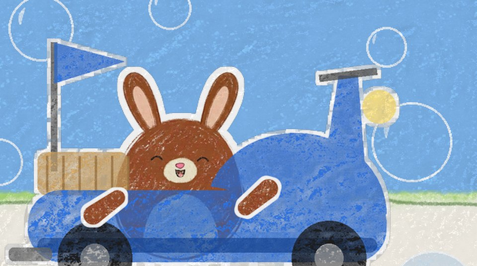
Rad 4: "Peta, peta – (plopp, plopp!)": petar på två bubblor med tassen, de spricker på ekot
Kanel: nyfiken när hon petar → skrattar på varje plopp
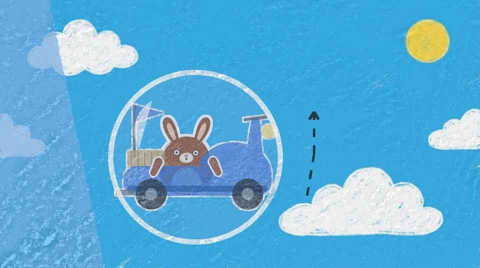
Rad 5: "Upp i en bubbla – (upp, upp!)": en jättebubbla sluter sig runt Kanel och mopeden och lyfter mjukt, två lyft, kritsvep i himmelsblått
Kanel: forvanad (stora ögon, O-mun) när bubblan sluter sig → skrattar på "upp, upp!"
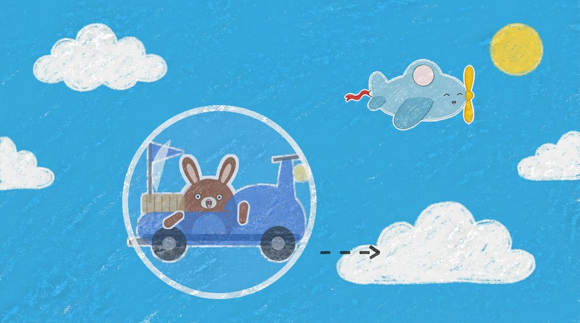
Rad 6: "Förbi flygplanet – (hej, hej!)": bubblan svävar bland molnen, Pella flyger förbi lite högre upp, båda vinkar två gånger
Kanel: karleksfull → ropar på "hej, hej!". Pella: blinkar → skrattar
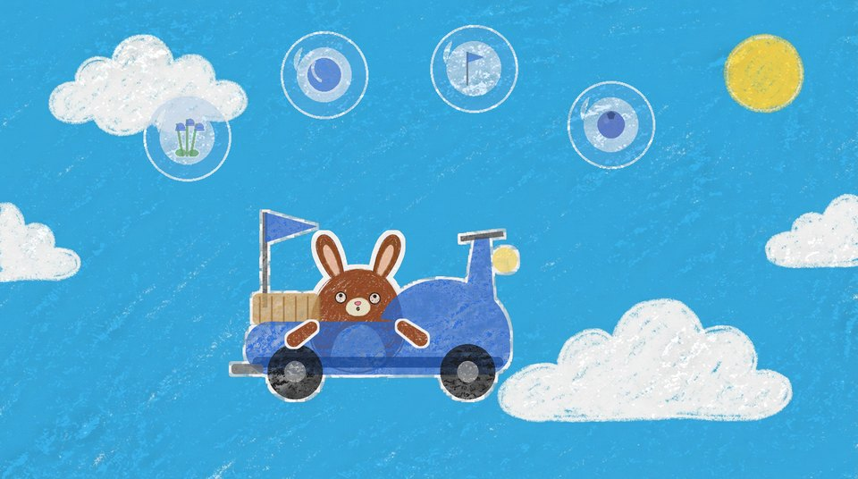
Rad 7: "Blå är den bubbligaste färgen! (Plopp!)": små bubblor med blåklockan, bollen, flaggan och blåbäret flyter upp, en per ord; på "Plopp!" spricker jättebubblan, och på "Mjukt, mjukt – (putt, putt!)" dalar mopeden ner och landar på en kudde av bubblor
Kanel: forvanad på varje ny bubbla → njuter på "färgen" → forvanad på "Plopp!" → skrattar och blinkar på de två mjuka gungningarna
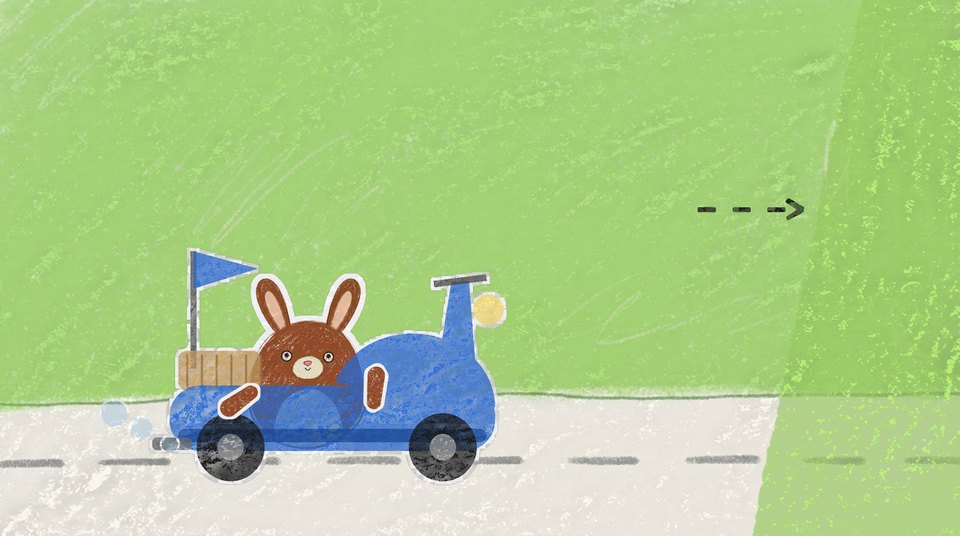
Rad 9: "Vad är blått? Titta ut!": kritsvep i vägens gröna, hem igen, tassen över ögonen åt båda hållen
Kanel: nyfiken, blicken följer tassen åt ena hållet och sedan det andra
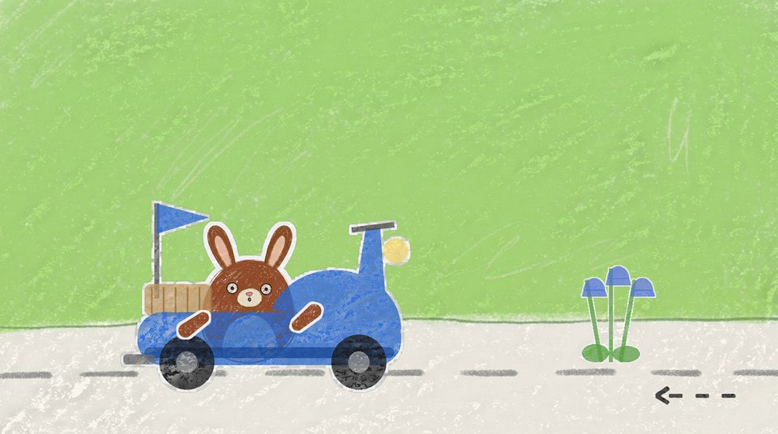
Blåklockor glider in vid vägkanten, Kanel pekar
Kanel: nyfiken på "Vad är blått?" → forvanad (stora ögon, O-mun) när klockorna syns → ropar på "Titta där!"
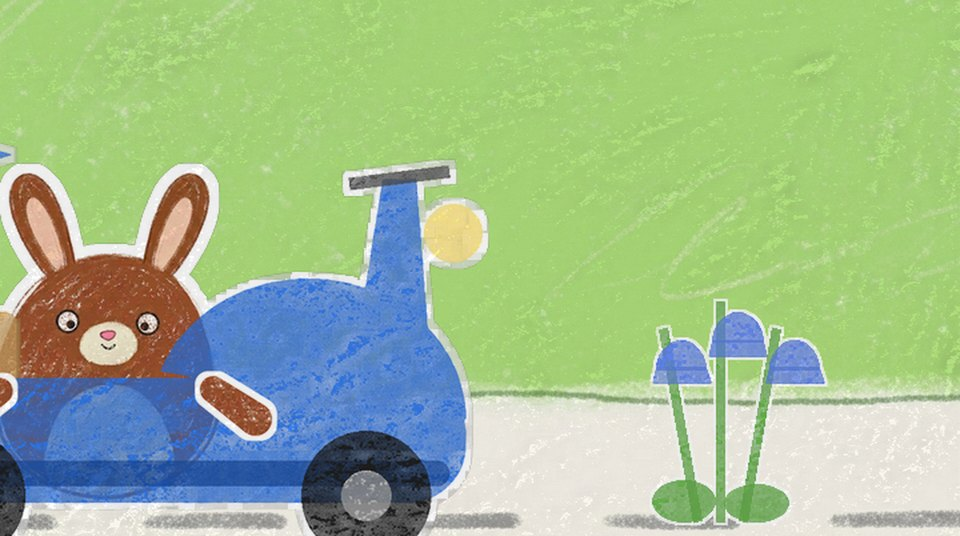
Kanel svänger med öronen på varje "ding", blommorna nickar tillbaka
Kanel: skrattar på första ding, skelogd på andra (blommorna nickar tillbaka!), skrattar på tredje
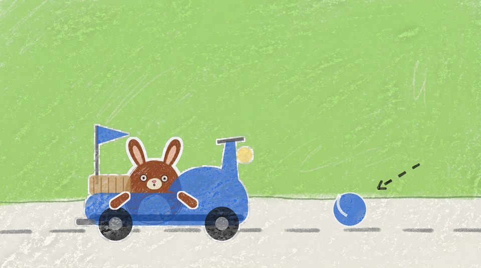
Bollen studsar ut på vägen framför. Kanel stannar, vägen står still
Kanel: forvanad när bollen kommer → nyfiken medan hon stannar och väntar
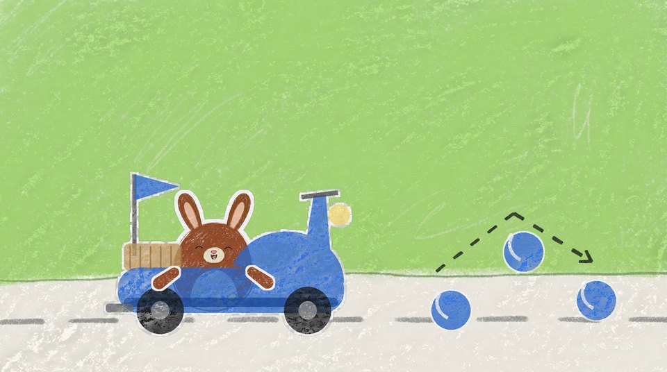
Bollen studsar tre gånger över vägen och ut ur bild, Kanel skuttar på sadeln per studs, sedan kör hon vidare
Kanel: skrattar på varje studs (huvudet följer bollen) → glad när hon kör vidare
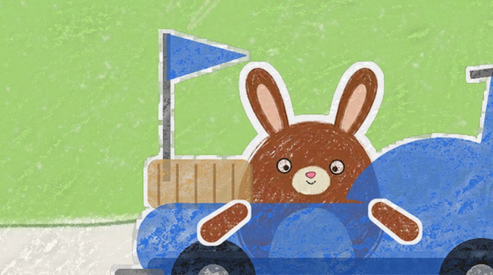
"Vad mer är blått? Kan du se?": Kanel vänder huvudet och tittar bak mot flaggan, kameran åker in
Kanel: nyfiken, blicken bakåt → skelogd när hon försöker se bakom sig
Pausen 4–5 s, Kanel väntar och tittar på tittaren
Kanel: nyfiken mot tittaren → blinkar mitt i pausen
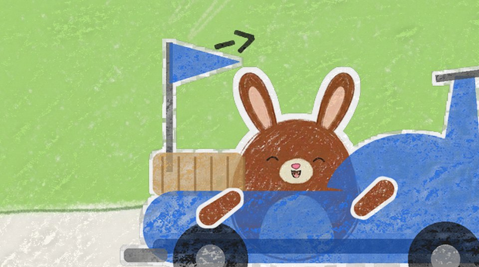
"Mopeden är blå – och flaggan med! Vift, vift, vift!": klappar på styret, flaggan fladdrar, öronen viftar tre gånger i takt
Kanel: ropar på "Mopeden är blå" → forvanad när flaggan fladdrar ("den är också blå!") → skrattar på varje vift
Refrängen igen, likadan: bubbelresan (se refrang-plan.md)
Kanel och Pella: samma uttryck rad för rad som 05a–h
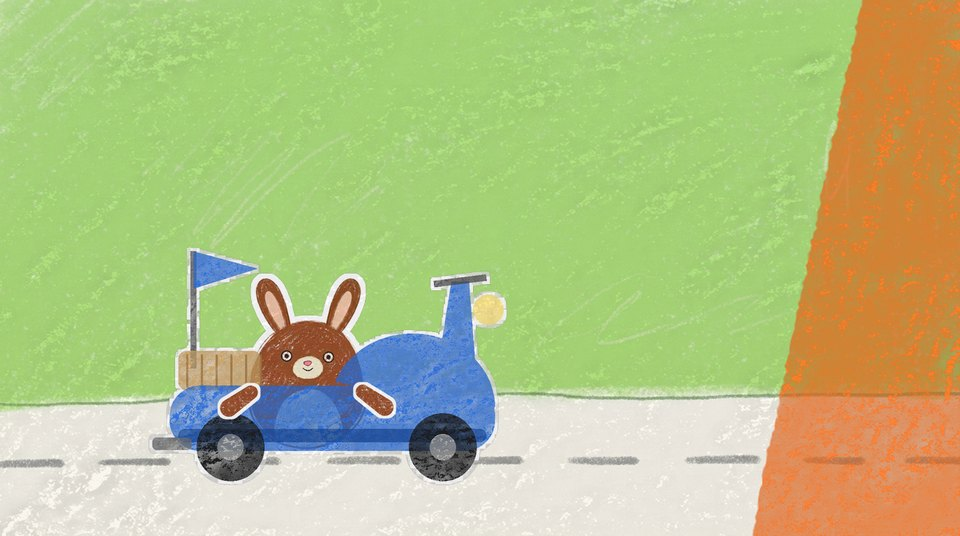
Kritsvep i äppelträdets orange
–
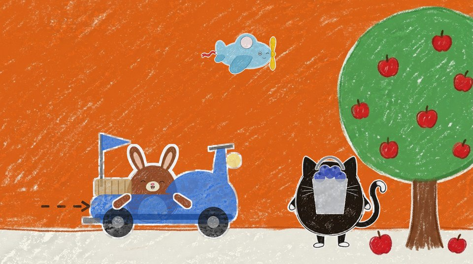
Äppelträdet: Pella flyger förbi högt uppe en gång till (en sak i taget), sedan puttrar mopeden in från vänster och stannar under trädet vid Kaj
Pella: blinkar ner mot trädet. Kaj: nyfiken (tittar upp efter Pella) → forvanad när mopeden puttrar in. Kanel: nyfiken → skrattar när hon ser Kaj
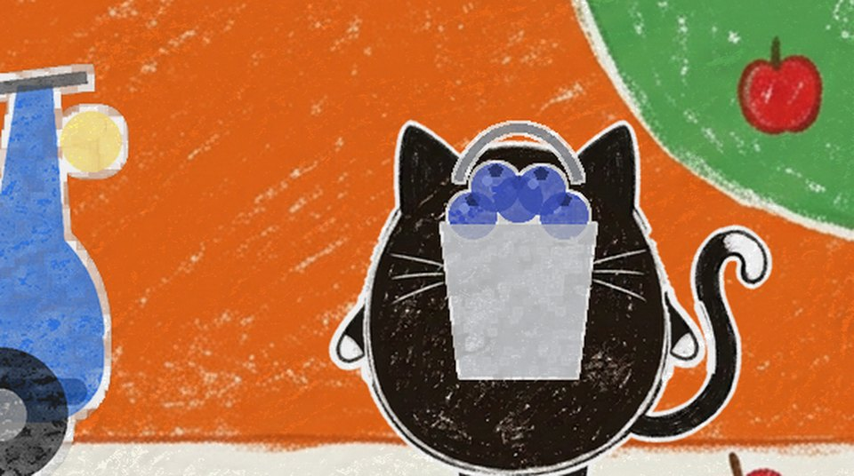
"Blåbären är blå – små, små, små": hinken full av bär
Kaj: karleksfull, tittar ner i hinken. Kanel (i kanten): forvanad på "Blåbären" → slickar på "små, små, små" (hon är sugen)
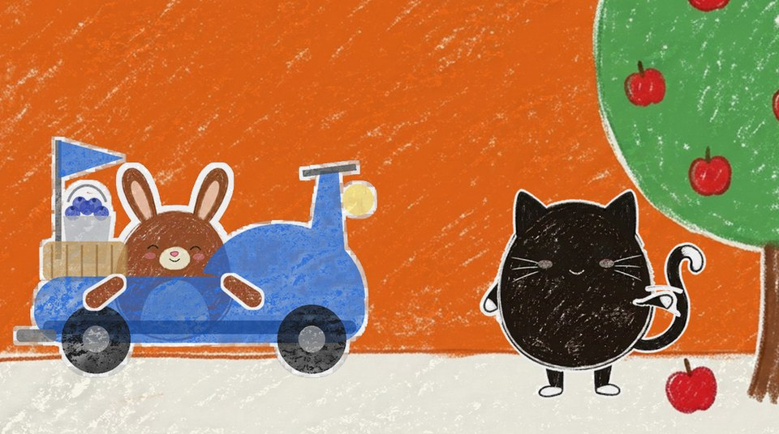
Luckan: "Hej, Kaj!" "Mjau! Hej, Kanel! Vill du ha blåbär?" "Ja, tack!" "Varsågod!" Kaj ställer hinken i korgen bak. "Tack!"
Kanel: ropar på "Hej, Kaj!" → nyfiken medan han frågar → skrattar på "Ja, tack!" → karleksfull på "Tack!". Kaj: blinkar på "Mjau!" → nyfiken på frågan → karleksfull på "Varsågod!"
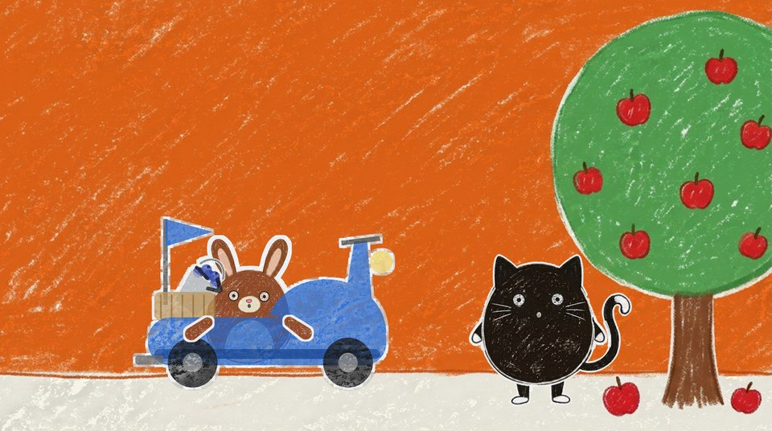
"Oj, oj! Hinken välter!": mopeden putter till när Kanel kör iväg, hinken tippar i korgen
Kanel: forvanad (stora ögon, O-mun) på "Oj, oj!". Kaj: forvanad
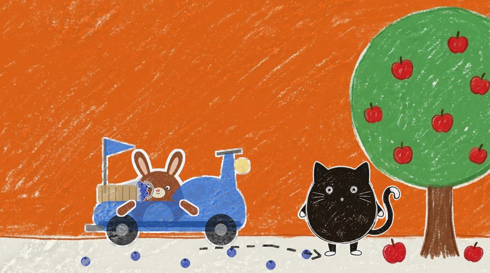
"Rull, rull, rull – åt alla håll, bort, bort, bort": bären rullar ut över golvet, mindre och mindre
Kanel: skelogd på "rull, rull, rull" (bären rullar åt alla håll) → nyfiken på "bort, bort, bort", blicken följer bären. Kaj: forvanad
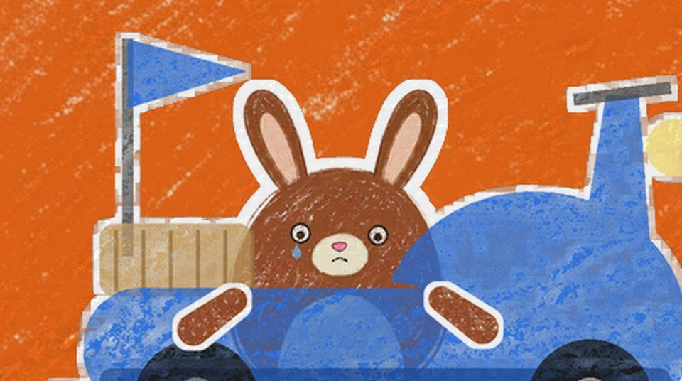
"snyft, snyft": Kanel ledsen, öronen hänger, bara på den här raden
Kanel: ledsen, med en liten tår
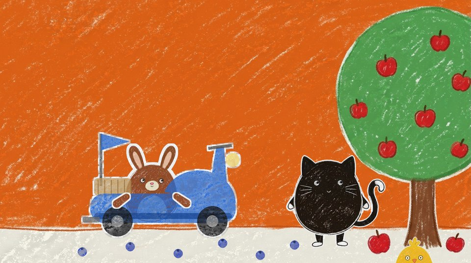
"Vem kan hjälpa?": Kanel och Kaj tittar ut mot tittaren. I den hållna takten tittar Pips tofs fram bakom äpplena på golvet som ledtråd
Kanel: nyfiken mot tittaren. Kaj: nyfiken. Pip (bara tofsen och ögonen): forvanad
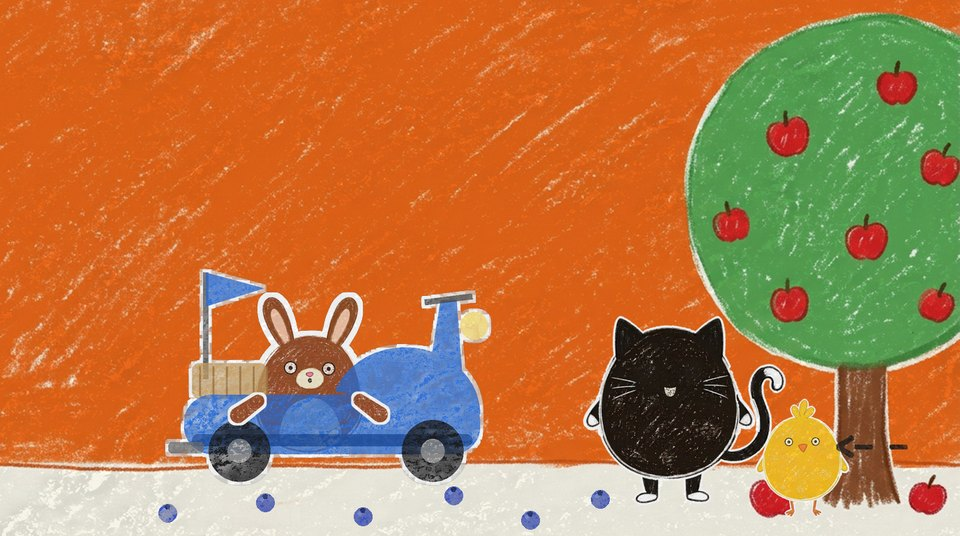
"Kycklingen!": Pip springer in från höger
Pip: ropar (pip, pip!). Kanel: forvanad → skrattar. Kaj: skrattar
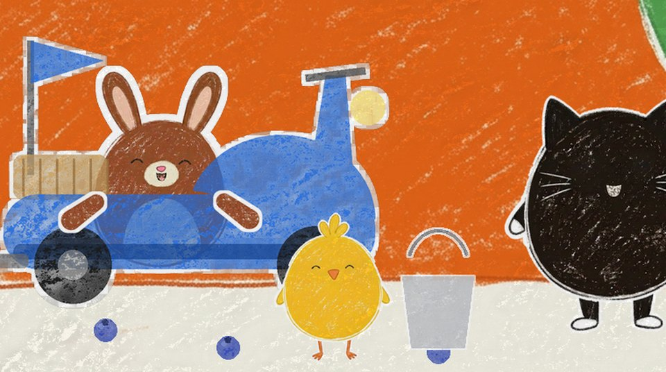
"Pick, pick, pick": Pip pickar upp tre bär, ett per pick, och lägger dem i hinken
Pip: nyfiken (letar på golvet) → skrattar på varje pick. Kanel: forvanad → skrattar
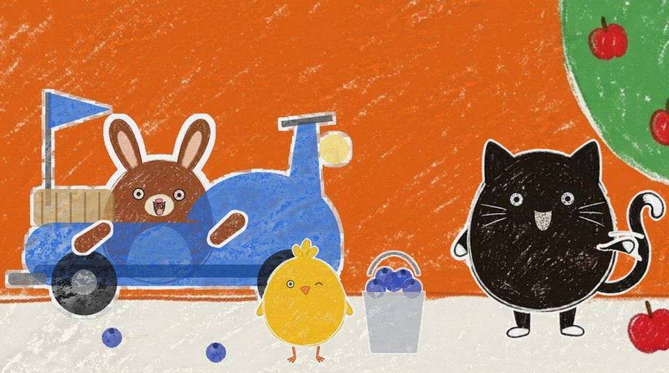
"Alla plockar – ett, två, tre!": Kanel och Kaj plockar med, ett bär per siffra
Alla tre: ropar på "ett", "två", "tre" (räknar högt). Pip: blinkar mot Kanel mellan siffrorna
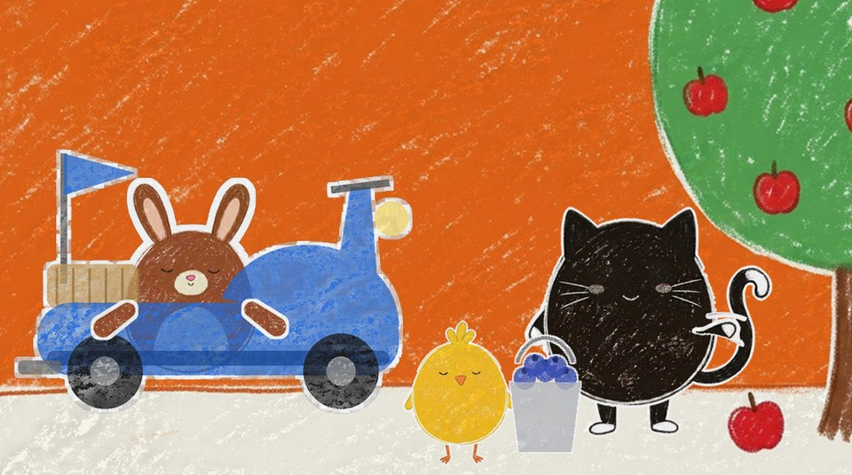
"En näve var – mums, mums, mums!": Kaj delar ut, alla äter
Kaj: karleksfull när han delar ut. Kanel och Pip: karleksfull när de tar emot → njuter på "mums, mums, mums" (ögonen stängda)
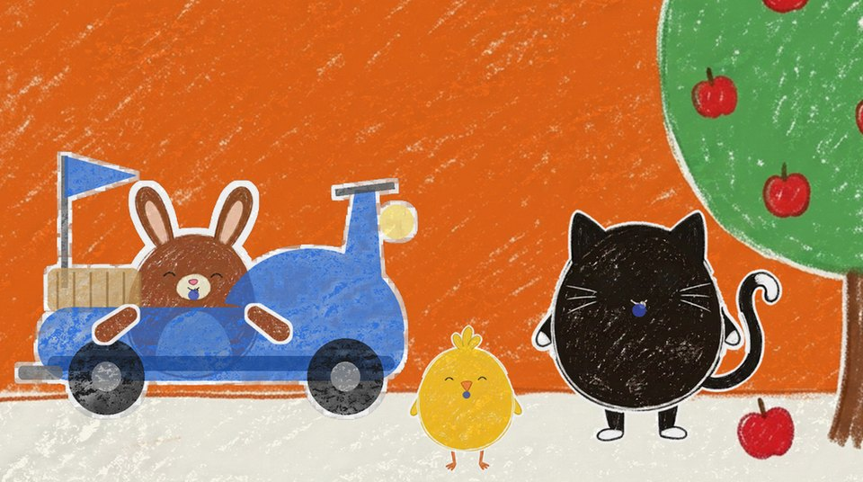
"Räck ut tungan – blå, blå, blå!": alla tre räcker ut tungan, tungorna är blå (kod), alla skrattar
Alla tre: slickar (blå tunga) på "Räck ut tungan" → skelogd på "blå, blå" (tittar på sin egen tunga) → skrattar på "Hi-hi!"
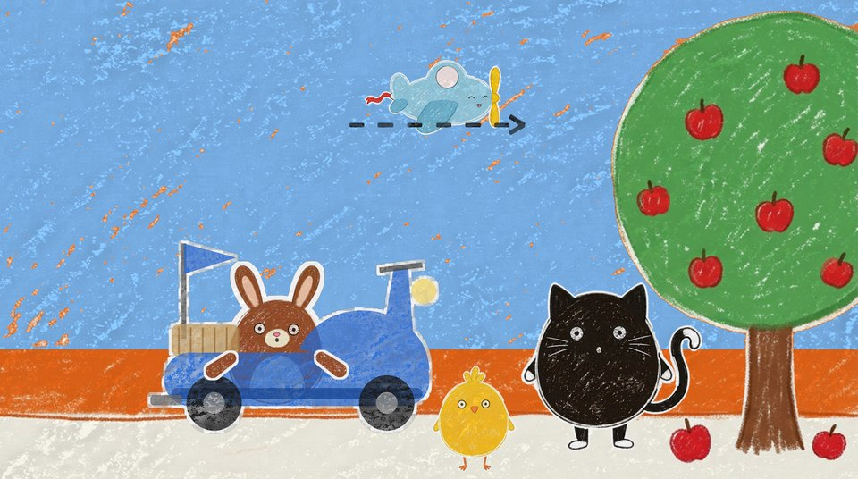
"Titta upp – där flyger flygplanet!": Kanel säger tack till Pip, sedan tittar alla tre upp; kritan sveper blått över den orange väggen och Pella flyger in högt uppe med sitt röda band
Kanel: karleksfull på "Tack!" till Pip. Pip: karleksfull. Sedan alla tre: nyfiken (blicken upp) → forvanad när Pella syns. Pella: skrattar
"Danspaus! (Danspaus!)": musiken stannar ett slag, alla fryser och dansar sedan
Alla: forvanad när musiken stannar → ropar på "Danspaus!"
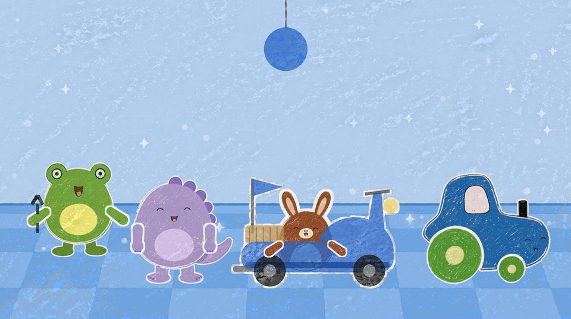
"Hoppa, hoppa!": Gurra hoppar, hans blå fluga studsar
Gurra: ropar → skrattar. De andra i kanten: skrattar
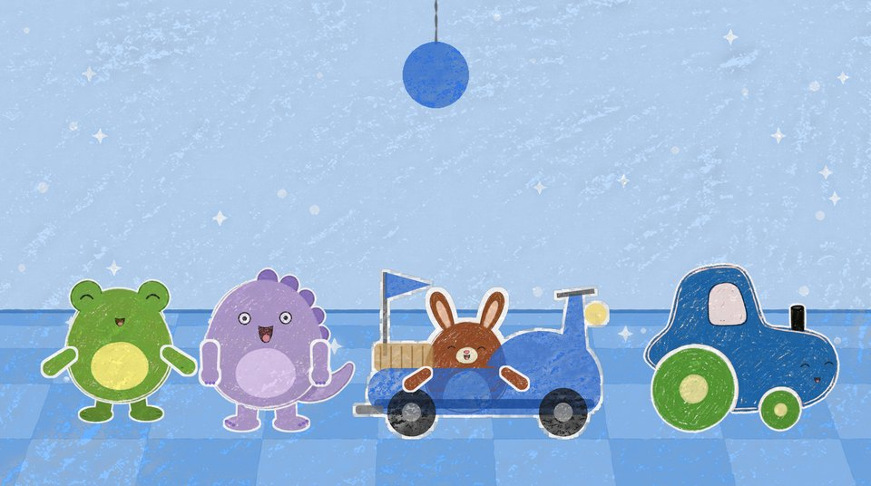
"Stampa, stampa!": Disa stampar med sina stora fötter, golvrutorna lyser per stamp
Disa: ropar → skrattar. Gurra: forvanad på första stampen
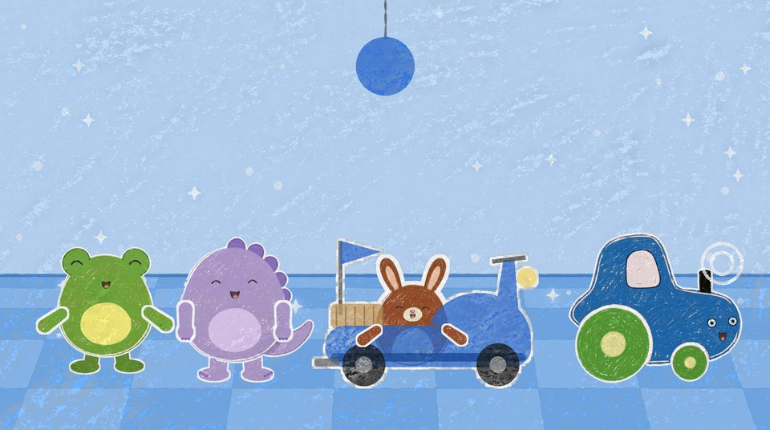
"Tuta, tuta!": Tuff tutar och gungar fram och tillbaka
Tuff: ropar på varje tut → blinkar. Disa: skrattar
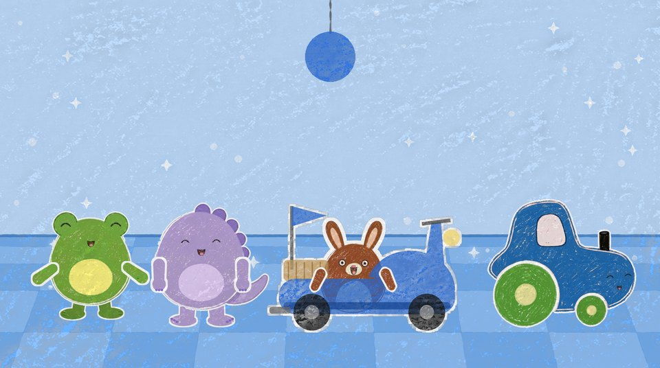
"Alla dansar – blå dans!": alla sex dansar
Alla: skrattar, Kanel ropar på "blå dans!"
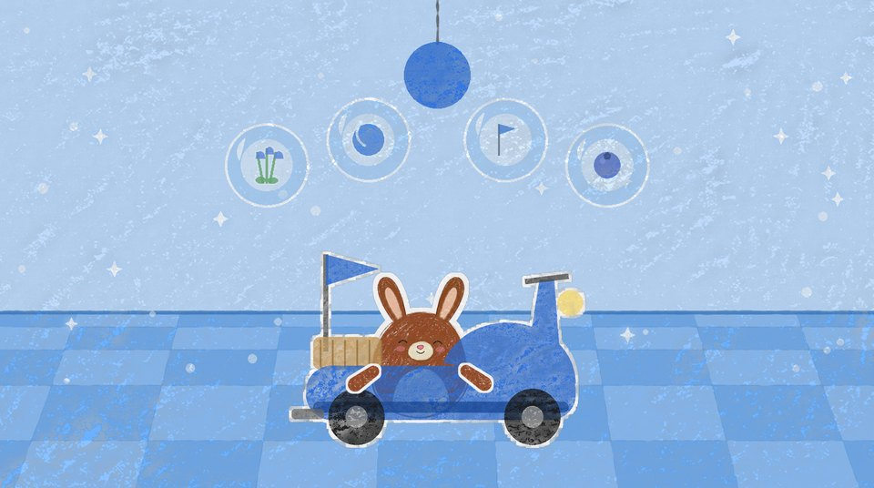
Sammanfattning som 006–007: klockorna, bollen, flaggan, bären, mopeden stora på en vit kritskiva och upp i raden runt kulan; på "Blå är den bubbligaste färgen!" får klistermärkena i raden en bubbla runt sig, och på "Plopp!" spricker de
Inga figurer på kritskivorna. På kroken: alla i discot forvanad på "Plopp!" → skrattar
"Hej då, hej då – putt, putt!": kritsvep tillbaka till äppelträdet under den blå himlen. Kanel, Kaj och Pip vinkar hej då till Pella som flyger iväg åt höger, mopeden puttrar två gånger och Kanel vinkar sist mot tittaren
Slutögonblicket: alla tre karleksfull medan de vinkar upp mot Pella. Pella: blinkar tillbaka. Kanel: blinkar mot tittaren på sista "putt"
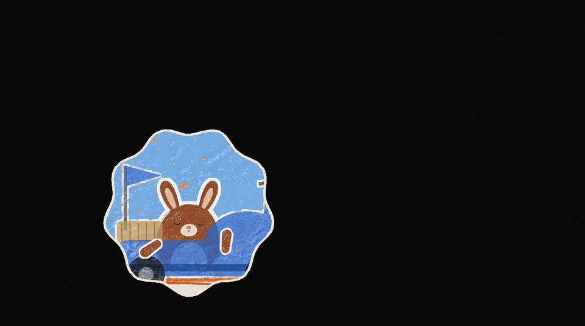
Kritirisen sluter sig runt Kanel som vinkar
Kanel: njuter (nöjd, ögonen stängda) medan cirkeln sluts
bygg.py):rekvisita/moped-bla (blå mopeden: kåpa, sadel, styre med lampa, korg bak, två hjul)bubblorna (bubbelmolnet, bubbelhavet, jättebubblan, sakbubblorna, bubbelkudden; ritas i kod även i filmen, ev. bakgrunder/bubbelhavet)rekvisita/blaklockor (blåklockor vid vägkanten)rekvisita/boll-bla (blå bollen)rekvisita/blabar (blåbärshinken och lösa blåbär)refrang-plan.md: blå bubblor ur avgasröret, in i bubbelhavet, upp i en jättebubbla till Himlen (befintlig bakgrund), förbi Pella, sakbubblorna på kroken, plopp, och hem med ett kritsvep i vägens gröna.munFarg i kit.js). Pip har sin näbb som mun (kycklingen-pip-nabb.png).~/.claude/skills/ai-video/.venv/bin/python -I bygg.py i den här mappen.